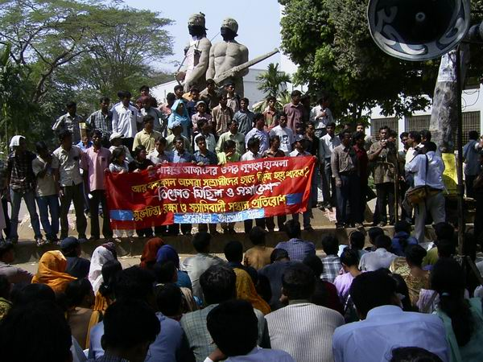
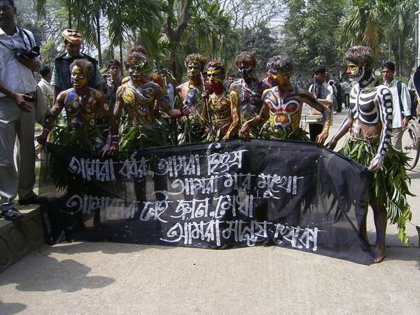

|
|
|
|||||||||||||||||||||||||||||||||||||||||||||||||||||||||||||||
|
|
||||||||||||||||||||||||||||||||||||||||||||||||||||||||||||||||
|
|
||||||||||||||||||||||||||||||||||||||||||||||||||||||||||||||||
|
|
Humayun Azad: The marked man A H Jaffor Ullah
Prof. Azad's premonition came true. The goons perhaps hired by the bunch that hates Prof. Azad struck outside Boi Mela (Book Exhibition Center). Hours after a bunch of assailants descended on Prof. Humayun Azad's body to silence his voice for ever, I received an e-mail from news forum "Future of Bangladesh." A kind member from Dhaka frantically wrote, "A little while back (Dhaka, February 27, 2004 at 9:30) eminent writer Humayun Azad was attacked in front of Bangla Academy by a group of unknown assailants with chopping knives and has been grievously injured. Channel I has just now showed a completely blood drenched Azad being brought by the police to Dhaka Medical College Hospital and given primary treatment. His face, hands, T-shirt, trouser everything was soaked in blood. His condition is serious." An hour later, the same person from Dhaka who sent earlier an e-mail sent a grim message: "Humayun Azad has been shifted to CMH as his condition turned worse." My telephone started to ring immediately. My friends who write passionately on liberal issues pertaining to Bangladesh were very much perturbed hearing the sad news of an attempt on Prof. Azad's life. Unless you are out of sync with news from Bangladesh, you perhaps are well acquainted with the fact that the tiny country of 140 million has become very intolerant as of late. Only years ago, another Bangalee writer, Poet Shamsur Rahman, was attacked by some goons in the privacy of his own house. The attackers could not do more harm then because of the immediate action by the poet's neighbors. The Mullahs in Bangladesh have also given threats to Taslima Nasrin. Mind you, these are not idle threats. This time the goons have targeted Prof. Azad. It is worth mentioning here that Prof. Azad's recent writings included in his book "Pak Sar Zamin Saad Baad" have drawn attention from Jamaat leaders. Maulana Delwar Hossain Saidee, one of the most garrulous Jamaat MP, and his followers have asked the Khaleda Zia Administration to ban Prof. Azad's book. On February 28, 2004, the Daily Star reporting on attempted assassination of Prof. Azad wrote, "Addressing a demonstration at Baitul Mukarram National Mosque on December 12, leaders of an anti-Ahmadiyya outfit demanded arrest and trial of Prof Azad for the novel." Freedom loving Bangalees from all walks of life should denounce this heinous attack on one of the luminaries of Bangladesh's literati, Prof. Humayun Azad. Intolerance against liberal writers is on the rise in Bangladesh, which is symptomatic of a wholesale Islamisation of Bangladesh. I am confident other freethinkers and secularists would pen protest notes against this barbaric attack on Professor Azad. The government should apprehend the perpetrators of this crime and bring an end to this kind of attack on intelligentsia and freethinkers. Free speech is a hallmark of liberal democracy and Bangladesh society should go an extra mile to foster free speech everywhere in our ancestral land. Prof. Humayun Azad has many followers in expatriate communities who would express their anger through posting in myriad Internet forums. I urge the Bangladesh government to investigate the matter thoroughly and see what role avowed detractors of liberal writers have played in this barbaric attack. Dr. A.H. Jaffor Ullah, a research scientist and columnist, writes from New Orleans, USA
 Our Members' reaction on this incident
|
|||||||||||||||||||||||||||||||||||||||||||||||||||||||||||||||

 By Naeem Mohaiemen
By Naeem Mohaiemen|
We Need to Fight the Disease, Not the Symptoms Sukhamaya Bain
A lot of outrage against the attack on Dr. Humayun Azad two days back
has been expressed in the Bangladeshi internet forums. Dr. Azad is a
noted secular intellectual of Bangladesh who has written
against the growing Islamic fanaticism in the country. He is
in a critical condition at a hospital in Dhaka. His life could
end anytime.
A few days back, a renowned and respected leader of the country, Dr.
Kamal Hossain, was attacked by armed thugs. Dr. Hossain also is
against Islamization of the state of Bangladesh.
Because of the severity of the condition of Dr. Azad, a lot of people
have been expressing their anger and frustration with the prevailing
lawlessness and Islamic hatred that the country has succumbed to.
The attack on Dr. Hossain did not get as much attention, because he is
not fighting for his life in a hospital bed.
The question is, what is the point of all these anger and frustration?
How long will these last? Dr. Azad will most likely die in a number of
days. All these emotions will fade away, probably in a number of
weeks. Life will go on in Bangladesh. The country will go deeper into
the darkness of Islamic hatred.
These emotions of anger and frustration are nothing but
talks about the symptoms of a severe disease. The country really has
very little force that is engaged in fighting this disease of
Islamic fanaticism.
The government is a coalition of BNP and two professed Islamic
parties. Much of the Bangladesh intelligentsia is corrupt to the core.
They try to convince the world that BNP is not an Islamic fanatic
party, that BNP is not Jamat-e-Islam. They try to tell the
world that the 'bismillah' at the beginning of the constitution in no
way degrades the non-Muslims of the land. They do not see any problem
with having a 'state religion' (which obviously is Islam).
This attack on Dr. Azad has caused a lot of loud noise among
Bangladeshis all over the world against Islamic fanaticism and against
the government of Khaleda Zia. Much of this noise has come
from Awami Leaguers.
The fact of the matter is, when BNP wants to show its Islamic
character by using 'bismillah' as a political slogan, Awami League
wants to show its Islamic nature by using 'allahu akbar' as its
political slogan. The fact of the matter is Sheikh Hasina tries
to compete with Khaleda Zia on who can do the 'hajj' more number of
times. The fact of the matter is, Islam is the overwhelming political
force of the country. The genuine fighters of Islamic fanaticism in
the country are very few and far between.
Awami League had a record of being considerably secular during Mujib's
time. That record has been tainted by the leadership of his daughter.
Instead of asking people to keep religion out of politics, the
party has engaged in appeasing Islamic fanaticism.
What Bangladesh needs is a real fight against the disease of
Islamic fanaticism. Crying about symptoms, such as the serious injury
and possibly death of Dr. Azad, would not really help. People
who genuinely feel that they are secular need to stop
appeasing the so-called religious sentiments of the fanatics and
the idiots. They need to fight the fanatics and educate the
idiots.
The fact that the number of secular people are small is not the real
problem, the real problem is their lack of conviction. The number
could never grow without lasting conviction of the few. The country is
badly in need of "a few good men and women" who
would maintain and propagate respect for the human and citizenship
rights of all its people.
|
||||||||||||
|
Expose the true colors of Islamic intellectuals in post Humayun Azad stabbing days!
By Mizanur Rahman Milon
As of late, Bangladesh is going through a very tough time, politically, socially, and economically speaking. However, the thing that scares me the most is the rise in Islamism. For example, only 3 days ago the fascist Islamist cadres have shown their Islamo-fascist face - they have jumped on Humayun Azad, a respected academician and writer, to kill him. The Islamo-fascists stabbed him repeatedly with crude sharp object to decapitate him. The self-proclaimed butchers of Islam enticed by the fiery speech of Jamaat stalwart Delwar Hossain Saidee who gave fatwa to declare writer Humayun Azad have decided to kill all the learned men of Bangladesh. The fundy Razakars got money from the Wahhabis to create second Afghanistan in South Asia. Bangladesh has become their playground under the patronage of government of fundamentalist Jamaat-i-Islami and Neo-Muslim League BNP. Uncle Sam is not watching them closely to monitor the Bangladeshi Islamic killers. The pentagon is too busy in Pakistan, Afghanistan and Iraq hunting down al-Qaeda soldiers and operatives of Osama bin Laden.

A unique protest
The Islamists in Bangladesh have gained power in recent days under the leadership of BNP - headed by Khaleda Zia who is not terribly a bright person, academically and otherwise. The soft supporters of the killer Jamaatis are keeping their mouth shut. They will come out though later to denounce us - the Bangladeshi freethinkers as Bangladeshi Zionists when we will criticize Islamic force for their barbarity against writer Humayun Azad. Then all of us will be under the similar threats of the Islamists. In fact, we are under the threats of the Islamo-fascists for quite some time in the Internet. Once the Islamists label someone as a Bangladeshi Zionist then what would be his or her fate. Islamists will single out that person; only thing they would need would be a fatwa from the likes of Delwar Hossain Saidee. Attempts will then be made on the life of that freethinker. Once a freethinker is silenced, then the soft supporters of Jamaat will remain silent again. This cycle will go on and on. You see, these soft supporters are bad news for free society.
The attempt on the life writer Humayun Azad has opened everyone’s eyes. Time has finally come to identify the Jamaati supporters in the USA. The Jamaati outfit in USA - the NABIC's self-proclaimed spokesperson Mohammad Omar Farooq called us Bangladeshi Zionists. I am not making this up. In many articles, he has characterized the writers who critiqued Palestinian leaders Yassir Arafat as Zionist supporters. This gentleman is silent now; possibly hibernating somewhere in America. Dear readers, some of you have called for making Bangladesh free from Jamaatis. Be aware of the soft Jamaatis like Mr. Omar Farooq. They call us Zionists and Murtaads (apostates) to make us the prey of the Islamic beasts. They later get satisfaction by keeping a silence. Must we not free our country USA from the Islamic wolves? Bangladeshi American freethinkers, please do get involved and write against the Islamic wolves living in the USA under sheep’s skin. You can influence more on freeing Bangladesh from the Islamic wolves from here. Bangladeshi freethinkers are protesting the criminals belonging to Jamaat against all odds. Here you do not have the odd situation as it is in Bangladesh. Expose the soft and hard criminals of Jamaat bravely. These pseudo-intellectuals in abroad provide the needed support for the rank-and-files of Jamaat organization in Bangladesh.
While the soft Islamic wolves are keeping silence, the hard wolves are cheering for the life threatening condition of Humayun Azad. Check for yourself the Jamaati hyenas dance in the web link http://bdsdf.ipbhost.com/index.php?showtopic=762.
The Islamic beasts in Dhaka took a snipe at Humayun Azad near Boi Mela in late February this year. The time has come for us, the freethinkers, to identify the pseudo-intellectuals who provide scriptural support for such mindless attempts on the life of our fellow comrades in Bangladesh. Write and speak vociferously against the attacks on freethinkers. The world should know the true color of Islamists especially those who are in America.
---------------------
Mizanur Rahman Milon writes from Arlington, Virginia, USA
| From: "Jahed
Ahmed" Date: Sun Feb 29, 2004 3:12 pm Subject: Freethinkers: Their one and only target |
|
Subject:
Freethinkers: Their one and only target
Now Militant Islamist's biggest and first-to-annihilate target is freethinkers such as all liberal writers, poets, human rights activist, novelist and likes.
Bangladesh, my beloved motherland! I dream to see you awake
before I die!! Will you please grant me such a privilege??
Jahed Ahmed
Subject: dormancy is no death!!
"It's the high time, friends, we all get on the
street", say Poet Shamsur Rahman/Prof. Kabir Choudhury/Dr.
Muntasir Mamun/Shahriar Kabir/Poet Belal Chowdhury/ Burhan Uddin
Khan Jahangir/Mahmud Selim/Kamal Lohani & Dipankar Goutam.
Dormancy should not be mistaken for death. Am I wrong,
my dear Bangladesh??
Jahed Ahmed
|
From: "Bibhangshu Adhikari"
Date: Sun Feb 29, 2004 3:11
am
Subject: BD Prime minister on stabbing of Prof.
Azad
The readers, please note what the prime minister of BD said about stabbing
of
Prof. Azad. A few words cited here "Hartaler Jonyoi Eta Kora Hoyechhe"
(
http://www.dailyjanakantha.com/hn5.pdf
), February 29, 2004 ).
The readers may remember the "threatnings" of the Government of
BD prior to the
latest hartal (general strike) by the opposition on February 28, 2004.
Although
I personally against shutting down the wheels under any circumstances but what
a
criminal way to resist ? The consceince of the "Humanity" must take
a notice of
this.
BA
Response:
| Subject | Name/Email | Date | |
| 15430 | Re: Shame on BD PM | Robin Khundkar | |
| 15424 | Re: Shame on BD PM | shabbir ahmed | |
| 15423 | Re: Shame on BD PM | fatemolla . | |
| 15419 | Re: Shame on BD PM | Ghulam Murshid |
From: "jisnu akhter"
Date: Sun Feb 29, 2004 8:08
am
Subject: NOT PROF. AZAD BUT OUR AZADI (SWADHINOTA)
IS ATTACKED!
NOT PROF. AZAD BUT OUR AZADI (SWADHINOTA) IS ATTACKED!
Humayun Azad a famous outspoken,freethinking liberal Author,Poet,Novelist has been attacked by the jamati-FUNDAMENTALISTS as claimed by his wife Latifa Kohinoor.She emphatically said, "Fundamentalists have done this". "Who else would do this? You know an MP even spat venom against him in parliament.Why didn't you take security measures to protect him after such an outrage in parliament?" an incensed Latifa asked Dhaka Mayor Sadeque Hossain Khoka and State Minister for Home Lutfozzaman Babar at the hospital. The ministers kept mum in embarrassment, but later promised action to hunt down the attackers.
As a Mukto Mona, I strongly condemn this savage act of brutality express oneness with the feeling og the wife of Azad, that some "a-manush-o-mukto mona fundamentalists'' have done it. Actually who have done it,--- is yet to be ascertained by Police through proper investigation.But Prime Minister like many other serious incidents of the past, to shield the gang of Jamati-Islami-killers of her partner in politics power have declared that Awami League has done it!! This is the "Action that was promised by Mayor State Minister for Home to the wife of Azad''.
It is the duty of the State to unearth the identity of the killers,book send the involved to Justice.Instead of doing that she has given a long rope to the killers.It amounts to giving indulgence to killers.State failed measurably to save Humayun Azad from the attack of the killers but taken immediate instantenious actions to "PROTECT'' the killers.It is nothing but rewarding the criminals. Of course it is the fundamental policy of the fundamentalist JOTE. They have rewarded the killers of the Father of the Nation Jail killing.
It was the bounden duty of the State to give physical protection to Prof.Humayun Azad. As the State failed measurably,criminals have won! Experts maintain,after an outrage in Parliament by Fundamentalist MP Sayeedi if our Intellegence would have come forward then such a serious incident would not have happened.Of course this is an ideal situation but in Jote regime it is a forgotten tune far cry! They are busy in annihalating opposition Awami League members minting money! Good governance has fled away by the behind doors due to the attack of the Jamati-killers.Now a host of killers god-fathers are rulling the Country!
What is written in Law Books could only be quoted but that does not carry any meaning value unless the State means business. State is now a party to wrong doings all sort of the violation of Human Rights with impunity! If society,people cannot put their trust then it is taken that State's breathing has reached the state of a critical condition.It can be said,Prof. Humayun Azad means Bangladesh is passing the most critical condition of its existance in the operation theatre of iron-curtain CMH of Dhaka Cantonment! BONGO NETRI SHEIKH HASINA was not allowed to enter in the CMH.But why? Is it as because Prof.Humayun Azad is in a very very critical condition of his life death! We think while Prof. Azad is in coma Bangladesh is at coma! Jote must remember the killing of Dr.Milon, killed by the Killers of Ho.Mo.Ershad on 27th.November,1990.What happened next? Ershad had to declare his abdication from power on 4, December on 6,December he had to step down! Jote's glass is full with blood.They should follow now the footprint of Ershad.Time is ripe.God's nemesis will befall on them at any time Insa Allah.
They are performing "JAN KOBOCH DUTY'' for the last two years now they have started to kill our Bangali-Voice. Enough is enough.We know you have drawn the Road Map of killing.People will Block you in all fronts from all directions.Remember, it is not AZAD but with him our AZADI has been attacked.Bangalis fought against the Paki friends without arms.I want to remind that Bangalis Iman, courage to fight against"al-badars-rajakers rapist criminal killers'' will bring total defeat to them soon.Bangalis would give a lesson to the killers protect AZADI with the spirit of " Amar sonar Bangla ami tomay bhalobashi'' like Prof.Azad whole Bangalis(not the Bangladeshis) would burry the bloody followers of "pak sar jomin sad bad''. AZAD'S SPIRIT OF PATRIOTISM WOULD PREVAIL.THREE CHEERS FOR AZAD.LONG LIVE AZAD WITH AZAD OUR AZADI,----"AMADER PRANER SWADHINOTA.EKATTUR''.
Jisnu Akhter, Professor of the School of Current Political Thoughts Culture.
|
Factoid
galore by the PM won't help apprehend Humayun Azad's assailants |
By Shabbir Ahmed
It should not come as a surprise that expatriate Bangalees throughout the world are deeply saddened by the news of the attack Dr. Humayun Azad had sustained from some coward goons. In addition to the Bangalees, a number of humanist individuals of the world are deeply shocked and concerned about the condition of this renowned scholar. While the people of Bangladesh are very much aware of the perpetrators of the crimes, the Prime Minster Begum Khaleda Zia made a statement that needs some probing to unmask her paranoiac mindset. She blamed the major opposition party for the crime without even reading a single line from the detective branch of the police. As the head of the government, she should’ve absolute access to the information on the crimes committed against a notable thinker/philosopher like Professor Humayun Azad. So far, the law enforcement department has the slightest clue; thus, they haven’t revealed any information whatsoever as to who did the attack against this eminent person even though the conscious people have very clear guess about the criminals and their godfather. Nevertheless, concerned people of Bangladesh and intellectuals who follow the events in Bangladesh from outside world will pay heed to what the Prime Minister had said thus far. In this case, she shouldn’t make statements that are nothing but factoids at best.
In any murder or attempted murder case, the investigators first investigate the motive of the criminals. If they don’t find first hand clue, then they take into account about the beneficiaries of the crime. The beneficiaries could be of political/economical/ideological nature depending the type of crimes. The losers/sufferers because of the crimes don’t automatically become the suspects. The beneficiaries could however be the prime suspects. In the case of the attempted murder of Dr. Humayun Azad, the losers are the pro-liberation forces/freethinkers/secularists of Bangladesh. The beneficiaries are the anti-liberation forces/fundamentalists/political Islamists of Bangladesh. The major opposition party Awami League led the war of liberation against the killer Pakistani regime and their fundamentalists/political Islamist partners in 1971. The writings of Dr. Humayun Azad enhance the strengths of the pro-liberation forces, who fought a war against the brutal pro-Pakistani forces under the elected government in exile formed by Awami League. Hence, the political party in question loses for the demise of writers/philosophers like Dr. Humayun Azad. Why on earth should their supporters attack him? It beats any logic, you see!
Prof. Azad’s writings certainly harm the anti-liberation forces politically and ideologically. They’re now sharing power with the party governed by the Prime Minister Begum Khaleda Zia. They’ve the power and means to talk against an educationist for writing a book even in parliament. Some of the fundamentalist/pro-Pakistani partners of the government expressed their outrage against Dr. Humayun Azad for writing a book titled “Pak Sar Zamin Sad Bad.” Many of these notorious political Islamists issued Fatwas to kill the intellectuals who differ with them on religious/political views in the past. Based on the rhetoric and past violent attitude of the fundamentalists/political Islamists, it is rather easy to conclude that they’ll be the beneficiaries if an eminent writer like Dr. Azad can’t write anymore. If he is killed, then their true color won’t be exposed any more. They can continue to be in power by keeping the present-day Bangalees in dark and confusion about them. They’ve achieved this mastery after their defeat in 1971. It is a survival tactics on their part.
Does the Prime Minister fail
to analyze simple facts or is she going to rely on factoids to make up stories
about who are behind the attack of Prof. Azad? It is possible though
that she doesn’t want to embarrass her coalition partners especially
Jamaat-i-Islami. However, she can hardly avoid the background
information and the political motives of her coalition government. So
far, it is observed that the deceptive policies are used randomly by the
present government in suppressing information about the activities of the
miscreants. This does not help improve the law and order situation in
the country, which is out of kilter now. Instead, the perpetrators get
encouraged. Come to think of it, a guess by the Prime Minister should be
solidly based on some logic and facts. Unfortunately, truth is seldom
seen to come out of the present administration because it is buried with
prevarications. After all, the Prime Minister and her government
aren’t truthful about the history of our liberation war. They are good
at manufacturing fibs about who gave the clarion call for our freedom
movement. Lately, textbooks have been re-written in Bangladesh to favor
the PMs pet view. This doctoring of books will have their adverse
effect; the nation will produce some confused citizens in years to come.
In summary, making fib, prevarication, etc., has become a pastime of our present day Prime Minister of Bangladesh. Evading truth to settle some old score with her opponent, ex-PM Sheikh Hasina, keeps her ever busy. The PM won’t admit in public that kowtowing the Islamists to win the election has its pitfall. Very soon, Bangladesh’s citizens are going to be disenchanted with her fib-making exercises. When push comes to shove, the people of Bangladesh will dump her and the Islamists in favor of a secular party. I hear the rumblings in the distant horizon.
------------------
Dr. Shabbir Ahmed, a researcher, writes from Naples, Florida. His e-mail address: sahmed@naples.net
more comments and news in our forum...
| Previous page |
Please
send your article at:
mukto-mona@yahoogroups.com